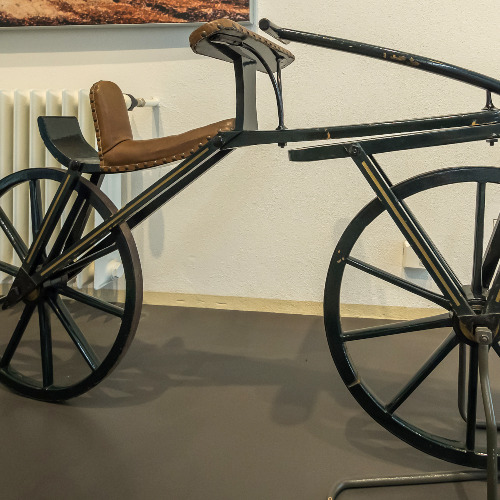
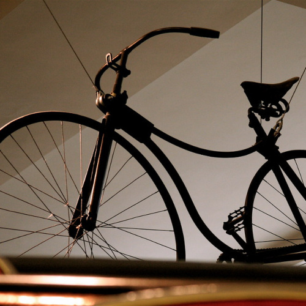

-

1818: de loopfiets
De eerste fietsen waren loopfietsen. Deze werden ontworpen naar aanleiding van transport problemen in Europa. De werking van de fiets was heel eenvoudig. Je ging zitten op een houten balk die het voor- en achterwiel verbond. Vervolgens stootte je beurtelings af met je voeten om vooruit te komen.
-

1870: de hoge bi
De fiets evolueerde in een snel tempo. Men ontdekte dat snel transport enorm handig kon zijn. Daarom werd er in 1870 een fiets ontworpen met een groot voorwiel met pedalen. Dankzij de pedalen zou de bestuurder het wiel snel in gang kunnen krijgen. Door de grootte van het wiel zou er hoge snelheid gecreëerd worden.
-

1885: de veiligheidsfiets
In 1885 verscheen er een fiets die niet zoveel verschilt van de hedendaagse fiets. Er waren duidelijke verschillen met zijn voorgangers. Zo was de fiets voorzien van een ketting aandrijving. Het grote wiel kon opnieuw vervangen worden door een wiel met een normale grootte. Het valrisico is zo kleiner, dus veiliger.
-

2001: de fiets in de 21ste eeuw
De hedendaagse fiets lijkt sterk op de veiligheidsfiets uit 1885. Tegenwoordig worden fietsen gemaakt van lichter materiaal waardoor je fietservaring een stuk comfortabeler wordt. Er zijn tegenwoordig veel varianten op de markt.